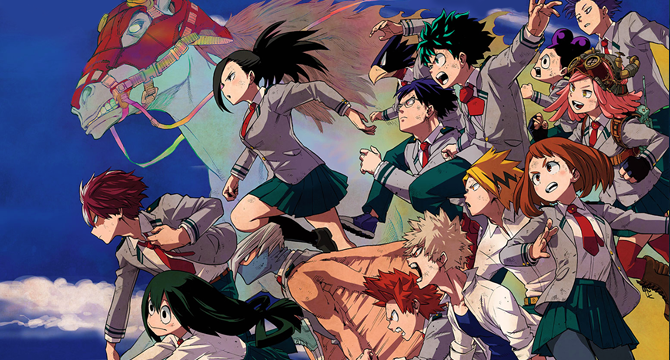

나의 히어로 아카데미아 -주요 등장인물
僕のヒーローアカデミア
주요 등장인물
발매 현황
인기
소설

미도리야 이즈쿠
본작의 주인공. 차기 최고의 히어로.
올마이트
미도리야의 스승. 평화의 상징.
바쿠고 카츠키
미도리야의 소꿉친구이자 라이벌.
토도로키 쇼토
미도리야의 친구이자 라이벌.
우라라카 오챠코
미도리야의 친구이자 작품의 메인 히로인.
이이다 텐야
미도리야의 친구.[1]
시가라키 토무라
본작의 메인 빌런. 미도리야의 숙적 포지션.
아이자와 쇼타
1 - A 반의 교사이다.